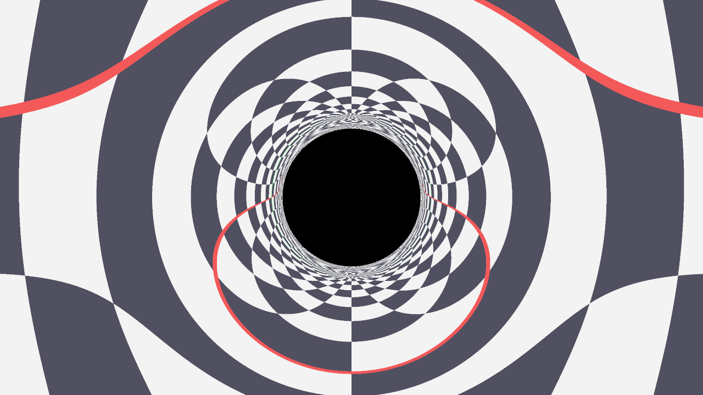

CS184 Fall 2026 Final Project Milestone: Black Hole Renderer
Summary
We are building a renderer that traces light along curved paths around a non-spinning (Schwarzschild) black hole. So far we have a working C++ renderer that integrates each camera ray with RK4 and adaptive step sizes, and renders the black hole's shadow and the lensed star field behind it. We also benchmarked adaptive against fixed step sizes: adaptive stepping produces the same image with about 9.7× less work. Following feedback on our proposal, the rest of the project focuses on numerical methods and GPU optimization.
Accomplishments
- Curved ray tracing. Each ray is integrated in 3D Cartesian coordinates using \( \ddot{\mathbf{x}} = -\tfrac{3}{2} h^2 \mathbf{x} / |\mathbf{x}|^5 \), where \( h = |\mathbf{x} \times \mathbf{v}| \) is conserved per ray and units are chosen so the Schwarzschild radius is 1. Rays stop when they fall inside the horizon (black), escape to large radius (sky lookup), or hit a step limit.
- Adaptive step size. The step is proportional to distance from the hole (\( 0.02\,r \)), so rays take small steps near the hole and large steps in empty space. A
--fixedmode uses a constant step instead, so we can compare the two. - Sky. Escaped rays sample an equirectangular star map by their final direction. A checkerboard sky makes the lensing distortion easy to see and check.
- Measurement tools. The renderer records the number of steps per pixel and writes a step-count heatmap (log scale), and logs render time and total steps to a CSV. A benchmark script runs every combination of resolution, step mode and thread count.
- Parallelism. Rendering is parallelized over pixels with OpenMP.
Preliminary Results
Black hole shadow and lensing


images/ as shadow_checker.png and shadow_stars.png, along with renders/heatmap_adaptive.png and renders/heatmap_fixed.png.Adaptive vs. fixed step size
We compared adaptive steps (\( 0.02\,r \)) against a fixed step of 0.03, which matches the adaptive step at the photon sphere (\( r = 1.5 \)), so both handle the hardest region equally well. Both match a very fine-step reference image to within 0.001% of pixels. Times are the median of 3 runs on an Apple M3 laptop.
| 1280×720 | 1 thread | 8 threads | Speedup | Steps / ray |
|---|---|---|---|---|
| Adaptive (0.02 r) | 7.7 s | 1.48 s | 5.2× | 230 |
| Fixed (0.03) | 70.4 s | 15.2 s | 4.6× | 2224 |
Both modes run at about 30 million steps per second on one thread, so the entire 9.7× difference comes from the number of steps. The heatmaps show why: adaptive stepping concentrates its work in a thin ring at the edge of the shadow, where rays orbit near the photon sphere, while fixed stepping spends about 2,200 steps on every ray, including rays that pass far from the hole.


Fixed steps are not hopeless at equal cost: a fixed step of 0.3 uses about as many steps as adaptive (223 per ray) and gets 0.012% of pixels wrong, compared to 0.001% for adaptive. Fixed steps break down once they get coarse. At a step of 1, the same size as the horizon radius, the shadow shrinks (4.82% of pixels captured instead of 5.375%) and 1.1% of pixels are wrong, likely because grazing rays step past the horizon test. Adaptive stepping is still correct at 74 steps per ray. One limitation is that our pixel-difference metric uses a coarse checkerboard, so it under-counts errors inside the thin photon ring. The integrator comparison below is the sharper accuracy test.
Parallel speedup
OpenMP gives about 3.6× on 4 threads and 5.2–5.7× on 8. Scaling flattens past 4 threads because threads 5–8 run on the M3's slower efficiency cores.
Accretion disk
Integrator accuracy
Progress Relative to Our Plan
Week 1 is complete: the renderer traces curved rays and renders the shadow against a star background. We went beyond the plan on measurement, adding step-count heatmaps, timing, and a fixed vs. adaptive comparison, because the proposal feedback asked for deeper evaluation of the numerical methods.
Updated Work Plan
Our proposal feedback noted that the core equations are well known and asked us to focus on numerical methods and GPU optimization. The rest of the project centers on careful comparison and measurement:
- Week 3: Numerical methods and disk shading. Compare Euler, RK4, adaptive RK45 and leapfrog integrators against the exact deflection angle, measuring error vs. cost, drift in conserved angular momentum, and image error against a high-accuracy reference render. Compare linear interpolation against root finding for disk hits. Add gravitational redshift and Doppler beaming.
- Week 3: GPU port. Port the integrator to a GPU shader and measure frame time against the CPU version.
- Week 4: GPU optimization. Add one optimization at a time and time each: float vs. double precision, adaptive steps, a precomputed deflection lookup table (possible because a non-spinning black hole is spherically symmetric), and reducing uneven work between pixels, which our heatmaps show is concentrated near the photon ring. Report a speedup table and a frame-time vs. accuracy plot.
- Week 4: Final results. Final renders at several viewing angles, a flythrough video, and the presentation.